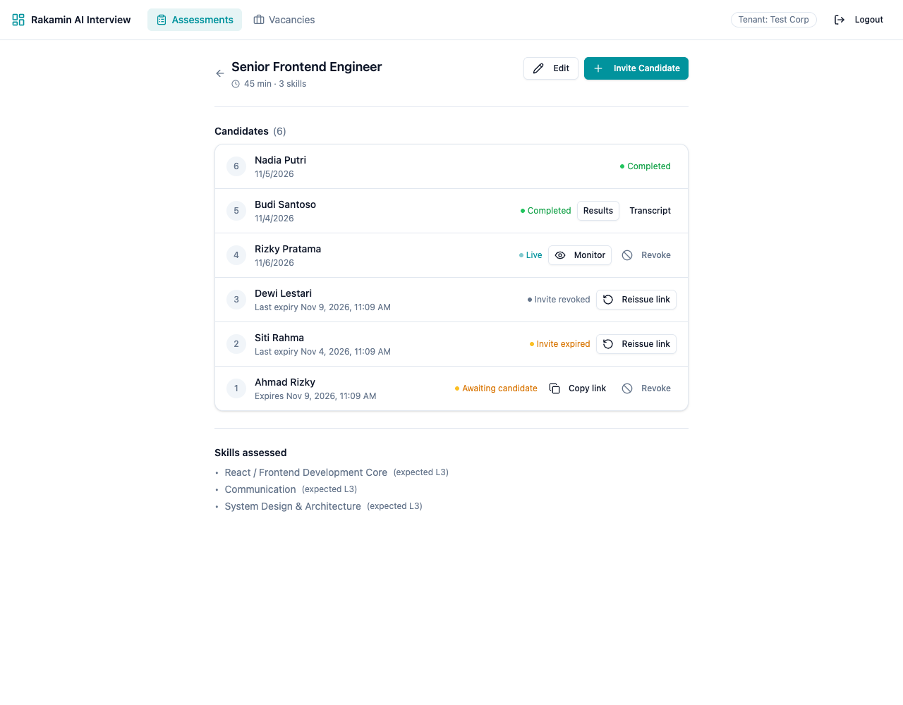
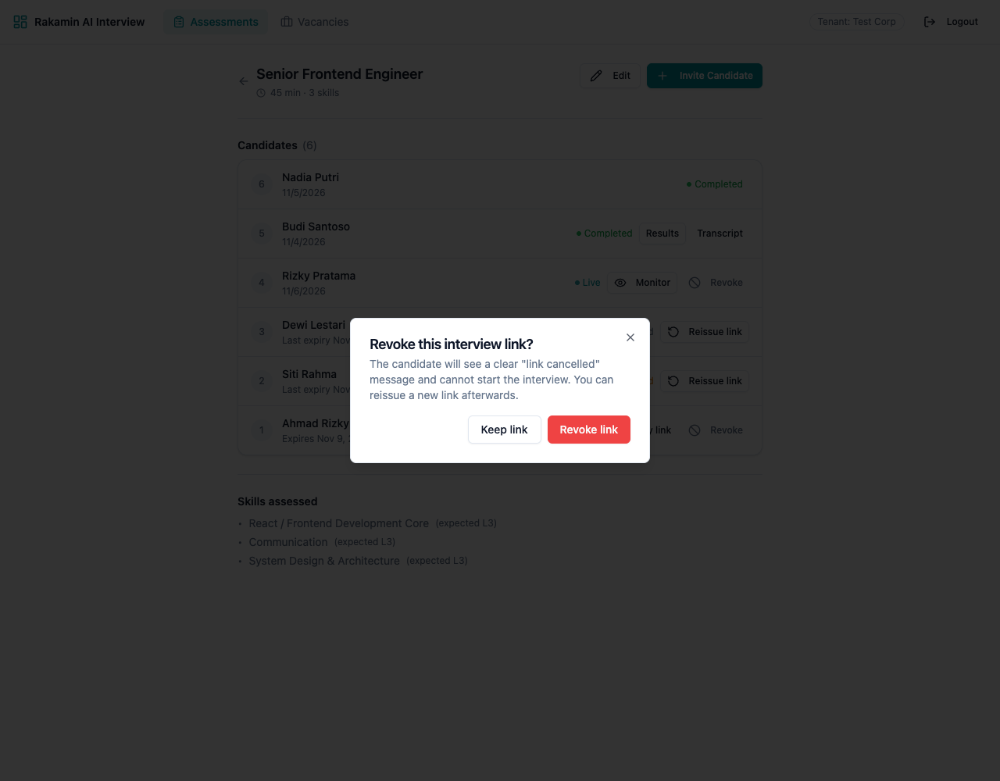
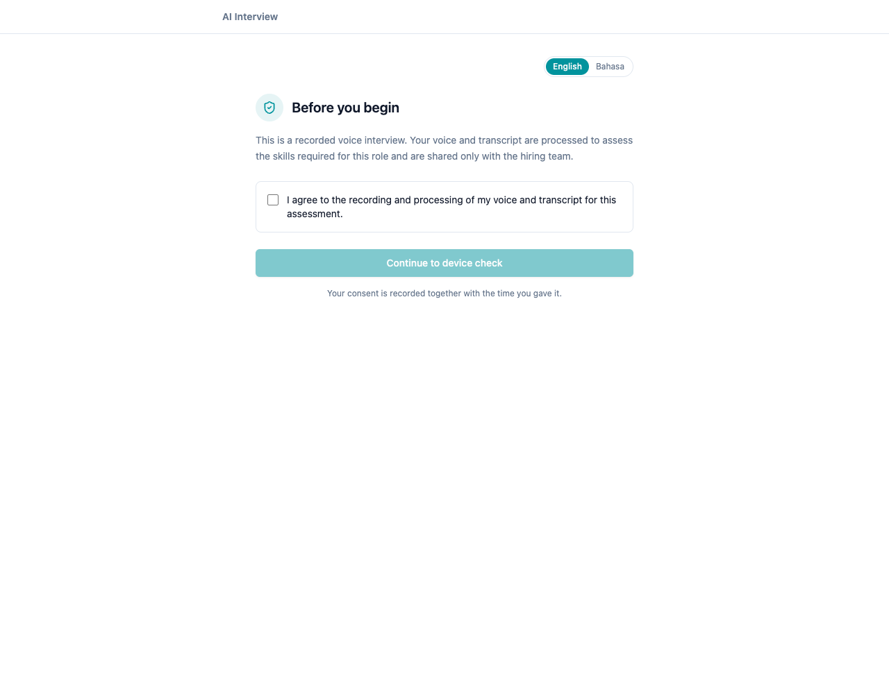
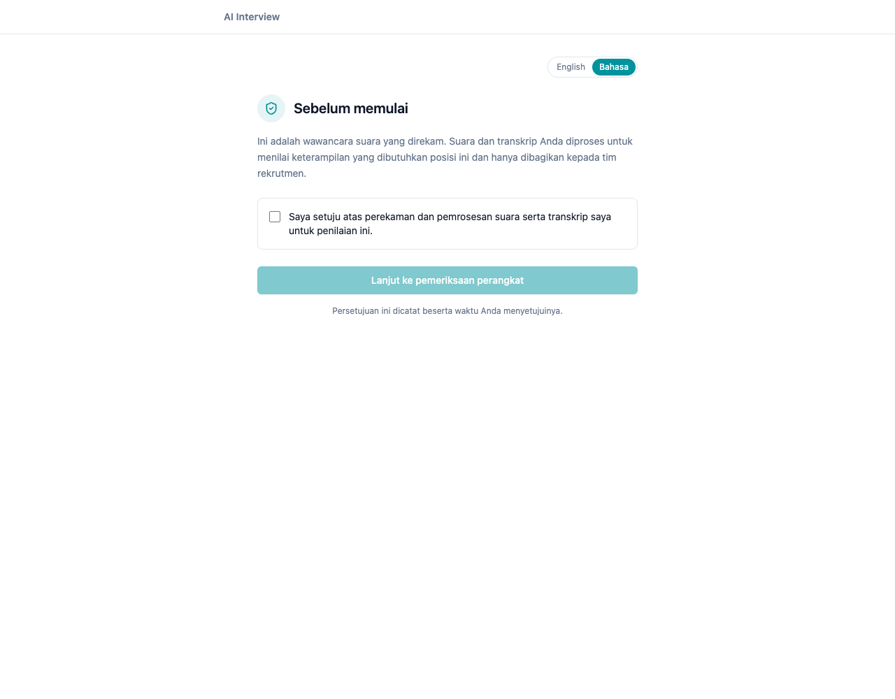
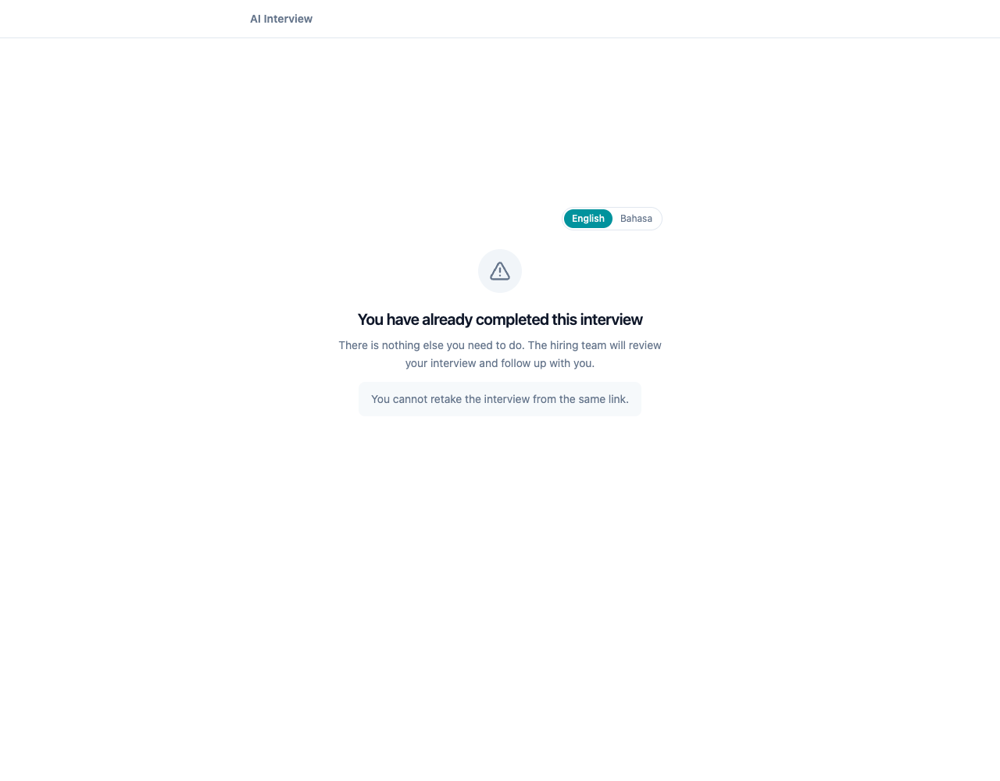
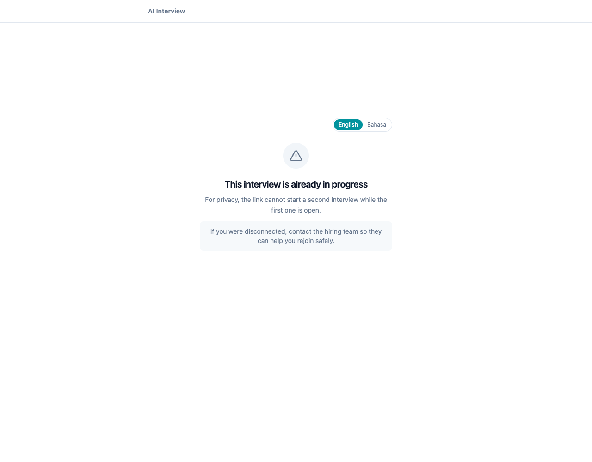
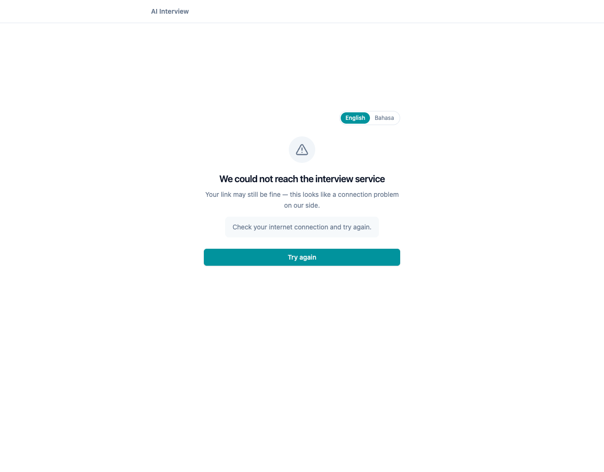
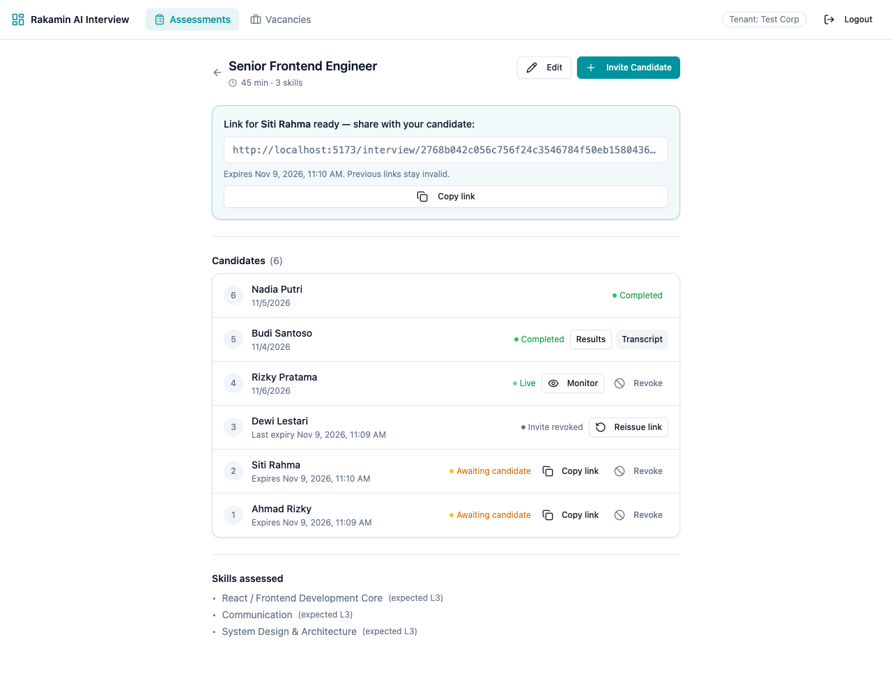
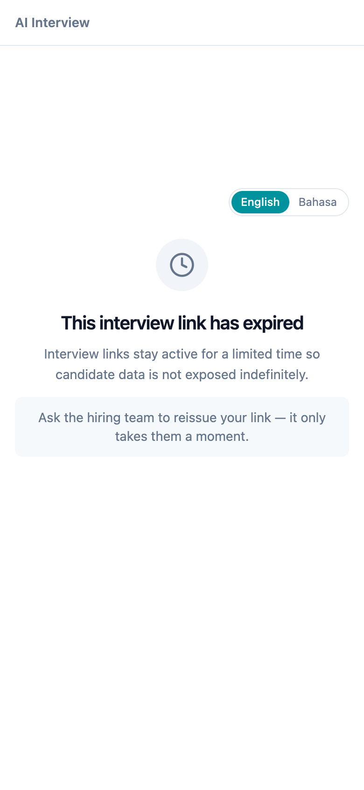
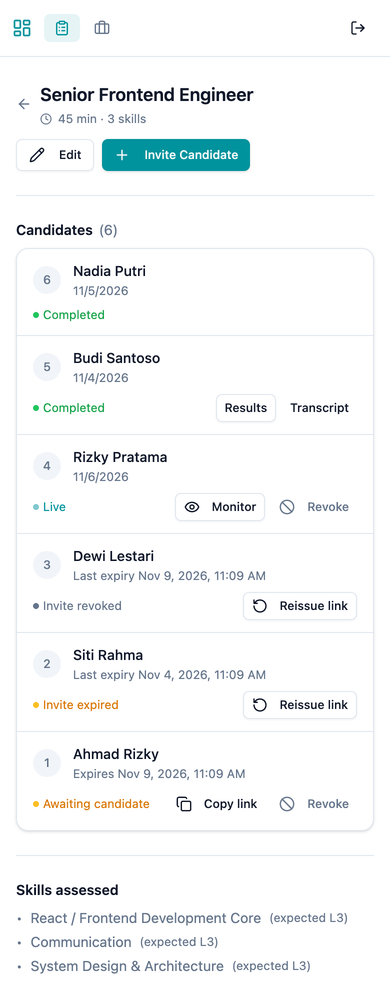

| Prepared by | Derio |
|---|---|
| Repository | rakamindev/ai-interview-platform |
| Branch | feat/candidate-invite-trust |
| Pull request | #240 |
| Chosen slice | Invite lifecycle + tenant security |
| Submission date | 6 November 2026 |
| Deliverables | This PDF, 13 screenshots, 3–5 min video, GitHub PR |
The baseline could create an interview, but it could not be trusted at the boundary where a candidate arrives. Invite links pointed at the API origin and returned 404. Links never expired and could not be revoked. Any failed lookup — expired, revoked, already used — rendered “Interview Complete”, telling a candidate who never interviewed that they were done. Nobody recorded consent before audio was captured. Separately, an assessor could read or modify another tenant's portfolio by guessing a global id.
I shipped a narrow, end-to-end slice that fixes those failures: a server-enforced invite lifecycle (expiry, revocation, rotation on reissue), precise candidate-facing states, explicit server-recorded consent, an assessor invite-management screen, and tenant-scoped portfolio authorization. The slice is demoable without a Gemini key and is verified by 43 RSpec examples, 24 frontend tests, a CI workflow, and two deliberately reintroduced faults that the suite catches.
The brief offers several slices. I chose invite lifecycle + tenant security because it is the highest-leverage area that can be made production-credible in one day: it touches authorization, privacy, candidate trust, and the assessor workflow, and it can be demonstrated deterministically without a live AI provider.
| Dimension | Decision |
|---|---|
| Primary user | Candidate arriving from an invitation, plus the assessor who manages invitations. |
| Core job | “Tell me honestly whether I can start, protect my data, and let the hiring team recover a link safely.” |
| In scope | Link construction, expiry, revocation, reissue/token rotation, candidate state machine, consent capture, assessor invite management, tenant scoping of portfolios and overrides, tests and CI. |
| Out of scope | Email delivery, a full invitation service, live audio/Gemini reliability, resume-an-interrupted-session, full i18n framework, admin user management. |
| Demo constraint | No Gemini key required. Seed data covers every invite state; the live interview path is observable but not re-recorded. |
Severity is scoped to this slice and to “about to ship to a client”. P0 blocks release; P1 breaks a core promise; P2 degrades an important workflow; P3 is polish with real cost.
Evidence. Session#invite_url used APP_BASE_URL (the API origin,
e.g. http://localhost:3001) and appended /interview/:token. That route only exists in
the React app on :5173; the API has no such route.
Repro. Create a session and open the returned invite_url. The candidate gets a
404 before seeing any interview UI. The assessor's “Copy link” action therefore distributed a broken link.
Fix. Use WEB_BASE_URL (with CANDIDATE_BASE_URL as a compatibility
alias and http://localhost:5173 as a dev default). Documented in
application.yml.sample. Covered by a model spec that asserts the URL contains /interview/
and never /api/v1.
Evidence. PortfoliosController#set_portfolio used a bare
Portfolio.find, and PortfolioSkillsController used a bare
PortfolioSkill.find. Authorization checked the role, not the tenant, so any authenticated assessor
could read another tenant's candidate portfolio or write an override by changing a numeric id.
Repro. Log in as tenant test-corp, request
GET /api/v1/sessions/<other-tenant-session-id>/portfolio, or POST an override to another
tenant's portfolio_skill_id. Both returned data or wrote a row.
Fix. Lookups now join through sessions and filter on
sessions.tenant_id = current_tenant_id. Cross-tenant requests return 404, not 403, so the API does
not confirm that a foreign resource exists. Verified by request specs for both read and write paths.
Evidence. sessions had no expiry or revocation fields. A leaked link remained
valid forever, and the assessor had no way to withdraw an invitation sent to the wrong person or for a paused
role.
Fix. Added invite_expires_at (default 72h, configurable via
INVITE_TTL_HOURS), invite_revoked_at, consent_given_at, and
invite_reissued_count. Reissue rotates the token instead of extending the old one, so a leaked link
stays dead. Expiry is evaluated at read time, so no background job is required for correctness.
Evidence. The candidate page caught every error with
.catch(() => setInterviewState("complete")). The backend also collapsed all rejected invites into
a generic 404. An expired or revoked candidate was told their interview was recorded and the hiring team would
follow up — a false statement about a recording that never happened.
Fix. The API now returns stable codes — invite_not_found (404),
invite_expired, invite_revoked, invite_completed,
invite_in_progress (410) — and the SPA maps each to a specific, honest screen with a next action.
The completion screen is only reachable from a real completion event. The frontend test asserts that an expired
link does not render “Interview Complete”.
Evidence. The candidate flow went straight from lookup to hardware check to microphone capture. Nothing recorded that the candidate agreed to voice recording and transcript processing; there was not even a checkbox.
Fix. A consent gate appears before the device check. The checkbox is affirmative and blocks
“Continue” until ticked. Consent is persisted server-side as consent_given_at through
POST /sessions/:token/consent, which is idempotent and refused on dead links. Consent copy is
available in English and Indonesian. The audit trail does not depend on client memory.
Evidence. User::ASSESSOR_ROLES was only %w[admin], and
ROLES did not include assessor, so an assessor account could neither be created
validly nor log in. AuthorizeApiRequest already intended to accept both roles.
Fix. ASSESSOR_ROLES = %w[admin assessor]; ROLES includes
assessor; login accepts either. Covered by a request spec that rejects a plain user
token with 403.
Evidence. The candidates list rendered every non-ended session as “Awaiting candidate” or “Live”. Expired and revoked links were invisible; “Copy link” was offered for dead links; there was no expiry date, no reissue, and no revoke. Pending sessions were polled every five seconds forever.
Fix. Each row now shows a precise status chip, expiry time, and only the actions valid for that state: copy/revoke for pending, reissue for expired or revoked, monitor for live, results/transcript for completed. Revoke is confirmation-gated. Actions surface API errors inline instead of failing silently. Polling runs only while an interview is live.
Evidence. The first version allowed revoking an active session. Because revocation outranks status in the status chip, the row would show “Invite revoked” and lose the “Monitor” action while the interview was still running.
Fix. Revocation is limited to pending invitations (422 while live). A live interview is ended explicitly, not revoked. This keeps “Live” and “Monitor” unambiguous. Covered by a request spec.
Evidence. The product targets the Indonesian market, but every candidate string was English. The assessor row also compressed candidate names to zero width on a 390px viewport once actions were added.
Fix. Candidate copy has English and Indonesian variants with a persisted language toggle,
defaulting to id when the browser locale is Indonesian. The assessor header and candidate row stack
cleanly on mobile; verified at 390×844 with no horizontal overflow.
A release review has to separate “the code is wrong” from “the product never decided”. Conflating them leads either to excusing bugs or to inventing policy in code. My classification:
| Area | Classification | Why / what I did |
|---|---|---|
| Invite URL origin | Defect | The frontend route already existed; the backend used the wrong base URL. No product decision needed. |
| Portfolio tenant scoping | Defect | Every other model is tenant-scoped; these two lookups bypassed the pattern. Security bug, not a spec gap. |
| Role constants | Defect | Two files disagreed about whether “assessor” exists. Fixed to the already-documented intent. |
| Silent failure → “Complete” | Defect | The UI asserted a recording that did not happen. Honesty is not optional; it is a correctness bug. |
| Invite TTL | Missing spec | No duration was defined. I chose 72h as a defensible default, made it configurable, and flagged it for product/legal sign-off. |
| Reissue policy | Missing spec | Should reissue extend the old token or rotate? I chose rotation because a leaked link must stay dead. Documented as a decision, not a hidden assumption. |
| Consent wording and legal basis | Missing spec | I implemented the mechanism and plain-language copy for EN/ID, but the final wording needs legal review under UU PDP. The system records when consent was given; it does not claim to be legal advice. |
| Resume an interrupted interview | Missing spec | There is no resume flow. Rather than fake one, an in-progress link shows an honest “already in progress — contact the hiring team” state. This is a known limitation. |
| Localization scope | Missing spec | The brief does not require i18n. I localized only candidate-critical copy to address the Indonesia-market gap without inventing a full translation programme. |
I optimized for a credible vertical slice under a one-day deadline, not for maximum surface area. The submission is intentionally narrow and deep:
organizations table.Explicitly not built: email delivery, a background expiry sweeper, an audit-event table, multi-invite-per-candidate, full i18n, and resume tokens. Each is a real next step, not a claim of completeness. The trade-off is deliberate: a smaller surface that can be defended line by line beats a broad surface that cannot be explained in an interview.
The central design choice was how to model invitation lifecycle. I considered adding fields to the existing
sessions record (Option A) versus introducing a first-class invitations aggregate with events
(Option B).
| Criterion | Option A — lifecycle columns on sessions (chosen) |
Option B — separate invitations + events |
|---|---|---|
| Time to a safe release | High: one reversible migration, no backfill service. | Low: new aggregate, backfill, dual-read/dual-write or cutover. |
| Backward compatibility | High: existing session payloads keep working; new fields are additive. | Medium: every reader must switch to the new relation. |
| Token rotation | Simple: rotate invite_token, keep a reissue counter. | Cleaner: each invitation row is immutable; full history by design. |
| Audit / compliance | Adequate for now: timestamps for consent, revocation, reissue count. | Strong: who revoked/reissued, when, and why, as append-only events. |
| Multiple invites per candidate | Weak: one invite per session. | Strong: modelled directly. |
| Migration risk | Low: additive columns with a 72h backfill for existing rows. | Higher: data move plus compatibility window. |
| Test surface | Small and focused; easy to reason about state precedence. | Larger: aggregate invariants and event projections. |
| Verdict | Ship now. It closes the security and trust holes without a risky migration. | Adopt when multiple invites, compliance-grade audit, or invite analytics become requirements. |
I also rejected a third “Option B” for the UX: keeping the single “something went wrong” screen and improving the wording. It is cheaper, but it preserves the core dishonesty — a candidate still cannot tell whether they are late, cancelled, done, or disconnected. Precise server codes plus distinct states are the whole point of the slice.
I wrote these before implementation and used them as the review checklist. Each maps to automated or visual evidence.
| # | Criterion | Evidence |
|---|---|---|
| AC1 | A fresh invite opens the consent screen; no audio is requested before consent is recorded. | Consent gate component tests + candidate flow test. |
| AC2 | An expired link returns 410 with invite_expired and never shows “Interview Complete”. | Candidate request spec; InterviewPage test; screenshot 05. |
| AC3 | A revoked link returns 410 with invite_revoked and a “cancelled” explanation. | Request spec; screenshot 06. |
| AC4 | Completed, in-progress, and unknown tokens have distinct states and codes. | Request specs; screenshots 07–09. |
| AC5 | Reissuing rotates the token, resets revocation, starts a new expiry window, and increments the counter; the old URL is dead. | Model + request specs; screenshot 11. |
| AC6 | Revoking a pending link is confirmed, immediate, and reversible only through reissue. Live interviews cannot be revoked. | Request specs; screenshot 02. |
| AC7 | The assessor sees the true invite status, expiry, and only valid actions; errors are visible. | Component logic + screenshots 01/11/13. |
| AC8 | Candidate-critical copy works in English and Indonesian; mobile layouts do not overflow at 390px. | Screenshots 04/12/13; overflow assertion in capture run. |
| AC9 | No assessor can read or write another tenant's portfolio or skill override. | Cross-tenant request specs; curl evidence. |
| AC10 | API and web tests run in CI on push and PR; the build type-checks. | .github/workflows/ci.yml; local passing logs. |
20261106000000_add_invite_lifecycle_to_sessions.rb: additive, reversible, backfills 72h expiry for existing sessions.invite_usable?, invite_status, revoke_invite!, reissue_invite!, record_consent!, corrected invite_url, configurable TTL.current_tenant_id.code on JSON errors.candidateAccess.ts: pure error mapping, EN/ID copy, consent copy — unit-testable without React.CandidateAccessState: honest, state-specific screen with retry only for connectivity failures.ConsentGate: affirmative checkbox, disabled continue, server error handling, language toggle.InterviewPage: explicit loading → rejected → consent → device check → interview states; no fake completion.
The baseline had no test runner and no CI. I added both, and kept the tests focused on behaviour rather than
implementation detail. The API suite runs against PostgreSQL with transactional fixtures and real request
middleware, including tenant resolution from the JWT scheme claim.
| Suite | Examples | What it proves |
|---|---|---|
spec/models/session_spec.rb | 18 | Defaults, URL origin, expiry/revocation/consumption, status precedence, rotation, consent idempotency. |
spec/requests/candidate_invites_spec.rb | 12 | Every candidate code path, consent, idempotency, audio-complete behaviour. |
spec/requests/invite_management_spec.rb | 10 | Assessor revoke/reissue rules, auth, role rejection, cross-tenant 404. |
spec/requests/portfolio_tenant_isolation_spec.rb | 4 | Read and write isolation for portfolios and overrides. |
| Total API | 43 | 0 failures |
candidateAccess.test.ts | 10 | Code→state mapping, status fallback, network classification, EN/ID copy. |
CandidateAccessState.test.tsx | 4 | Expired vs retryable rendering, Indonesian copy, no false completion. |
ConsentGate.test.tsx | 3 | Affirmative opt-in, language switch, error handling. |
InterviewPage.test.tsx | 7 | End-to-end state selection with mocked API and device check. |
| Total web | 24 | 0 failures, TypeScript clean |
$ bundle exec rspec 43 examples, 0 failures $ npm test Test Files 4 passed (4) Tests 24 passed (24) $ npx tsc --noEmit (no output — type-check clean)
Raw logs: assessment/evidence/rspec-passing.txt,
assessment/evidence/vitest-passing.txt, and
assessment/evidence/api-verification.txt (live curl transcript covering all five invite states,
consent idempotency, revoke, reissue, and cross-tenant 404s).
.github/workflows/ci.yml runs two jobs on every push and pull request. The API job uses
PostgreSQL 16, prepares the schema, and runs RSpec. The web job uses Node 22, runs npm ci,
Vitest, and the production build (which includes tsc). The workflow pins Ruby 3.3.2 to match the
repository's .ruby-version/Gemfile rather than relying on a moving minor.
Green tests prove little if they cannot fail. I reintroduced the two most important regressions, ran the suites, and captured the failures, then restored the fixes.
Session#invite_usable?def invite_usable? pending? && !invite_revoked? # expiry check removed end 42 examples, 3 failures - Session#invite_usable? is false once the link expired - GET candidate rejects an expired link with a precise code (got 200, expected 410) - POST consent refuses consent on an expired link (got 200, expected 410)
Full log: assessment/evidence/seeded-fault-backend.txt.
case "invite_expired": return "completed"; // restores the original misleading UX Test Files 2 failed | 2 passed Tests 2 failed | 22 passed - maps invite_expired to expired (received "completed") - shows an expired state instead of a fake completion screen (received "You have already completed this interview")
Full log: assessment/evidence/seeded-fault-frontend.txt.
AI assistance was used, and I am accountable for every committed line. My working rule was: generate candidates, verify behaviour. Concretely:
| AI-assisted | How I verified it |
|---|---|
| First drafts of the migration, model methods, controller branches, React components, tests, and report structure. | Read the diff end to end; ran the app; exercised every endpoint with curl; ran both suites; used seeded faults to prove the tests fail when the fix is removed. |
| Naming and copy variants (EN/ID). | Checked that every state has distinct copy, that no copy claims a completed recording for a rejected link, and that the Indonesian strings render in the UI. |
| Spec scaffolding and factories. | Confirmed the request specs go through real middleware and tenant resolution, not mocked authorization. Confirmed the cross-tenant specs fail if the tenant filter is removed. |
| Report wording and tables. | Cross-checked every number and claim against command output and screenshots; removed claims that were not reproducible. |
I did not verify a live Gemini interview or the audio pipeline end to end; that is outside this slice and stated as a limitation. I also did not commit a real API key, a production secret, or real candidate PII. The demo assessor credential is a development-only seed value, overridable by environment variable, and the seed is not run in production.
ALLOWED_ORIGINS: "*" is fine for local development and must be restricted before production.invitations aggregate when multiple invites or audit-grade history are required (Option B above).All screenshots are from the running app with deterministic seed data. The assessor list shows every invite state side by side; candidate states use the real API responses. Mobile captures are 390×844 at 2× scale.










# API cd api bundle install cp config/application.yml.sample config/application.yml # fill in DB + secret bundle exec rails db:create db:migrate db:seed bundle exec rails runner db/seeds_demo.rb bundle exec rails s -p 3001 # Web (separate terminal) cd web npm install cp .env.example .env # point VITE_API_BASE_URL at :3001 npm run dev # http://localhost:5173
On Apple Silicon, Rails 7 + Puma may need
OBJC_DISABLE_INITIALIZE_FORK_SAFETY=YES. The report's demo used Ruby 3.3.13 locally;
CI pins the Gemfile's 3.3.2.
Assessor login : assessor@example.test / demo-password-123 (development seed only)
Assessment : Senior Frontend Engineer
Candidates : Ahmad (fresh), Siti (expired), Dewi (revoked),
Rizky (live), Budi (completed + portfolio), Nadia (failed)
cd api && bundle exec rspec cd web && npm test && npm run build
/assessments/<id>/invite and compare the six rows. Try revoke, then reissue.